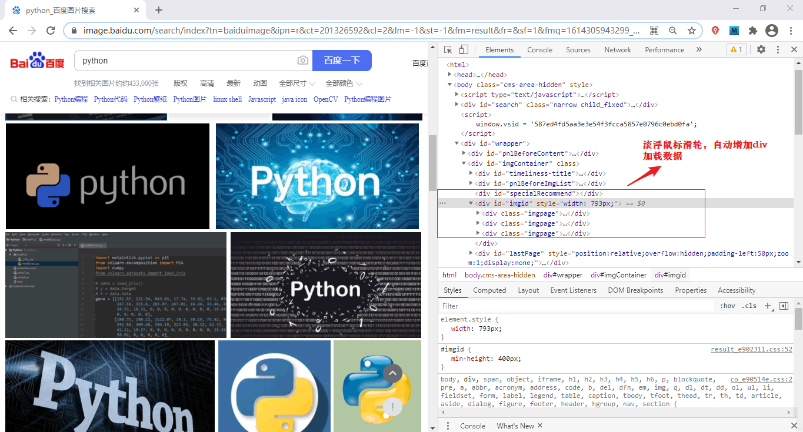
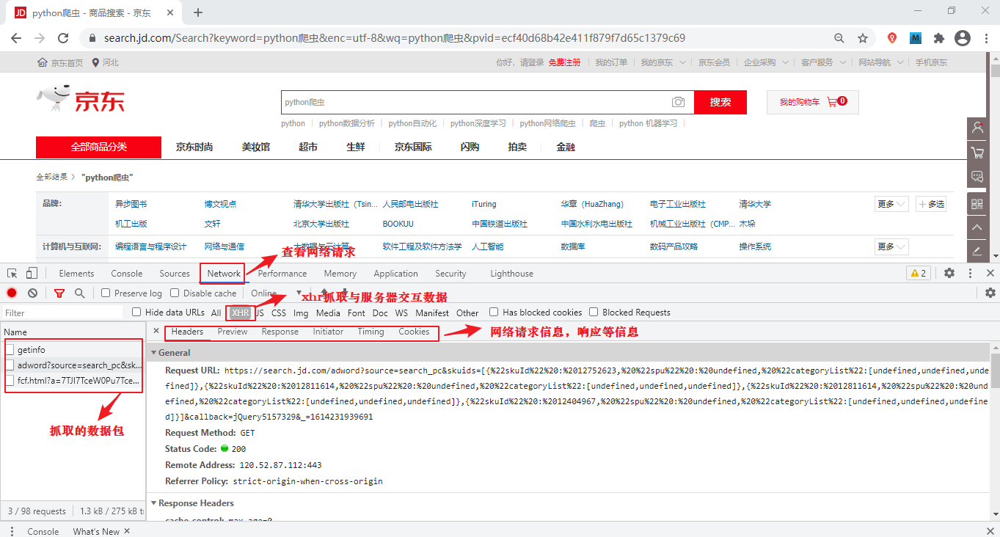
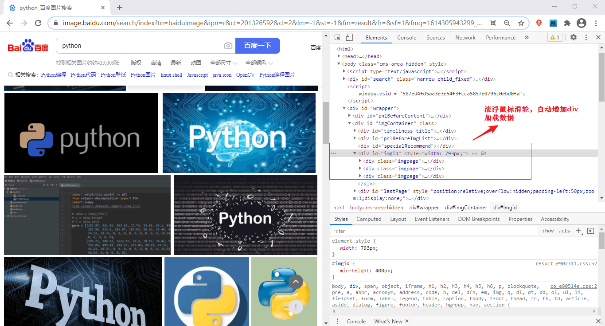
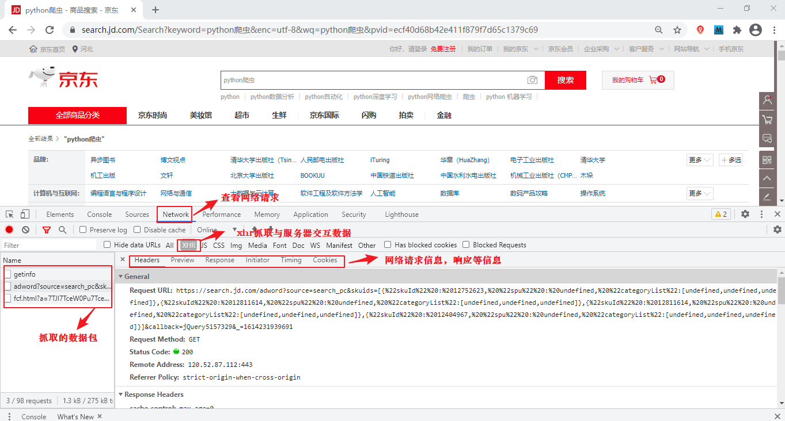

静态网页和动态网页
本节我们了解一下静态网页和动态网页的相关概念。如果您熟悉前端语言的话，那么您可以快速地了解本节知识。
当我们在编写一个爬虫程序前，首先要明确待爬取的页面是静态的，还是动态的，只有确定了页面类型，才方便后续对网页进行分析和程序编写。对于不同的网页类型，编写爬虫程序时所使用的方法也不尽相同。
我们知道，当网站信息量较大的时，网页的生成速度会降低，由于静态网页的内容相对固定，且不需要连接后台数据库，因此响应速度非常快。但静态网页更新比较麻烦，每次更新都需要重新加载整个网页。
静态网页的数据全部包含在 HTML 中，因此爬虫程序可以直接在 HTML 中提取数据。通过分析静态网页的 URL，并找到 URL 查询参数的变化规律，就可以实现页面抓取。与动态网页相比，并且静态网页对搜索引擎更加友好，有利于搜索引擎收录。
动态页面使用“动态页面技术”与服务器进行少量的数据交换，从而实现了网页的异步加载。下面看一个具体的实例：打开百度图片（https://image.baidu.com/）并搜索 Python，当滚动鼠标滑轮时，网页会从服务器数据库自动加载数据并渲染页面，这是动态网页和静态网页最基本的区别。如下所示：

动态网页中除了有 HTML 标记语言外，还包含了一些特定功能的代码。这些代码使得浏览器和服务器可以交互，服务器端会根据客户端的不同请求来生成网页，其中涉及到数据库的连接、访问、查询等一系列 IO 操作，所以其响应速度略差于静态网页。
抓取动态网页的过程较为复杂，需要通过动态抓包来获取客户端与服务器交互的 JSON 数据。抓包时，可以使用谷歌浏览器开发者模式（快捷键：F12）

当我们在编写一个爬虫程序前，首先要明确待爬取的页面是静态的，还是动态的，只有确定了页面类型，才方便后续对网页进行分析和程序编写。对于不同的网页类型，编写爬虫程序时所使用的方法也不尽相同。
静态网页
静态网页是标准的 HTML 文件，通过 GET 请求方法可以直接获取，文件的扩展名是.html、.htm等，网面中可以包含文本、图像、声音、FLASH 动画、客户端脚本和其他插件程序等。静态网页是网站建设的基础，早期的网站一般都是由静态网页制作的。静态并非静止不动，它也包含一些动画效果，这一点不要误解。我们知道，当网站信息量较大的时，网页的生成速度会降低，由于静态网页的内容相对固定，且不需要连接后台数据库，因此响应速度非常快。但静态网页更新比较麻烦，每次更新都需要重新加载整个网页。
静态网页的数据全部包含在 HTML 中，因此爬虫程序可以直接在 HTML 中提取数据。通过分析静态网页的 URL，并找到 URL 查询参数的变化规律，就可以实现页面抓取。与动态网页相比，并且静态网页对搜索引擎更加友好，有利于搜索引擎收录。
动态网页
动态网页指的是采用了动态网页技术的页面，比如 AJAX（是指一种创建交互式、快速动态网页应用的网页开发技术）、ASP(是一种创建动态交互式网页并建立强大的 web 应用程序)、JSP(是 Java 语言创建动态网页的技术标准) 等技术，它不需要重新加载整个页面内容，就可以实现网页的局部更新。动态页面使用“动态页面技术”与服务器进行少量的数据交换，从而实现了网页的异步加载。下面看一个具体的实例：打开百度图片（https://image.baidu.com/）并搜索 Python，当滚动鼠标滑轮时，网页会从服务器数据库自动加载数据并渲染页面，这是动态网页和静态网页最基本的区别。如下所示：

图3：动态网页(点击看高清图）
动态网页中除了有 HTML 标记语言外，还包含了一些特定功能的代码。这些代码使得浏览器和服务器可以交互，服务器端会根据客户端的不同请求来生成网页，其中涉及到数据库的连接、访问、查询等一系列 IO 操作，所以其响应速度略差于静态网页。
注意：一般网站通常会使用动静相结合的方式，使其达到一种平衡的状态。可参考《网站搭建动静结合》进行简单了解。
当然动态网页也可以是纯文字的，页面中也可以包含各种动画效果，这些都只是网页内容的表现形式，其实无论网页是否具有动态效果，只要采用了动态网站技术，那这个网页就称为动态网页。抓取动态网页的过程较为复杂，需要通过动态抓包来获取客户端与服务器交互的 JSON 数据。抓包时，可以使用谷歌浏览器开发者模式（快捷键：F12）
Network选项，然后点击 XHR，找到获取 JSON 数据的 URL，如下所示：
图4：Chrome抓取数据包(点击看高清图)
或者您也可以使用专业的抓包工具 Fiddler（点击访问）。关于动态网页的数据抓取，在后续内容会做详细讲解。关注公众号「站长严长生」，在手机上阅读所有教程，随时随地都能学习。内含一款搜索神器，免费下载全网书籍和视频。

微信扫码关注公众号